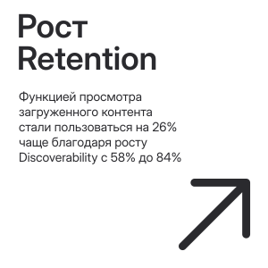
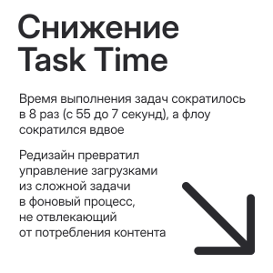
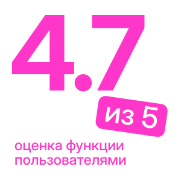
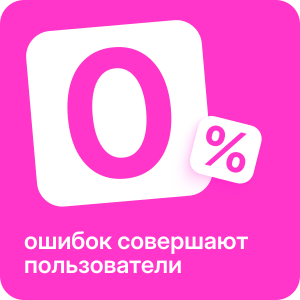

Редизайн пользовательского сценария в разделе «Загрузки»
Okko — крупнейший российский онлайн-кинотеатр и стриминговый сервис, предлагающий огромную библиотеку контента, доступного по подписке на различных устройствах.
Задача
В Okko есть функционал загрузки фильмов и сериалов на мобильное устройство. Возможность загружать и смотреть контент без интернета особенно полезна в путешествиях.
Функционал был разработан давно и с тех пор устарел визуально и с точки зрения опыта пользователя. Нужно внедрить автоматизацию, сделать функционал удобнее и#nbsp;заинтересовать ими аудиторию.
Цель
Увеличить частоту использования функционала и, как следствие, среднее количество часов просмотра на пользователя.
Критерий успеха
Статистически значимый рост Discoverability, Intent to Use и Trust Score. Дополнительно — снижение Task Time на задачу.
Моя роль
Продуктовый дизайнер end‑to‑end: вела проект от кабинетного исследования до финальных макетов под разработку.




Discovering
Погружение в тему
Я начала исследование с изучения брифа. Мы провели созвон со стейкхолдерами, где я задала уточняющие вопросы и выяснила, что Окко хочет внедрить фичу «умная загрузка», которая на тот момент ещё не была реализована на российских стримингах.
Исследование конкурентов
В рамках кабинетного исследования я исследовала конкурентов Окко — Кинопоиск, Иви и зарубежный Netflix (у которого уже был реализован функционал, запрашиваемый стейкхолдерами — «Smart Downloads»).
Анализ ЦА
Я выделила 2 ключевые группы на основе ручного анализа 150+ отзывов в App Store, Google Play и на платформах-агрегаторах отзывов (otzovik.com). Критерий сегментации — частота упоминания конкретных проблем.
«Путешественники» — доминирующий сегмент в отзывах. Постоянно в поездках, скачивают контент на устройство для длительных перелетов. Ключевая проблема — недостаток памяти на устройстве и необходимость постоянно ее очищать.
Анализ ЦА
Я выделила 2 ключевые группы на основе ручного анализа 150+ отзывов в App Store, Google Play и на платформах-агрегаторах отзывов (otzovik.com). Критерий сегментации — частота упоминания конкретных проблем.
«Экономящие» — второй сегмент по частоте упоминаний. Люди, у которых нет возможности купить пакет безлимитного интернета. Ключевая проблема — ограничение по пакету трафика у мобильных операторов и необходимость экономить.
Defining
JTBD
Для того, чтобы закрыть все потребности пользователей, я сформулировала JTBD для каждого сегмента.
Путешественники
- Когда я готовлюсь к поездке и вижу заполненную память устройства, я хочу легко отличать просмотренный контент от нового, чтобы быстро освобождать место.
- Когда память устройства заполнена, я хочу мгновенно освобождать место для нового контента, чтобы не тратить время на ручную очистку.
- Когда я еду по одному и тому же маршруту каждый день, я хочу получать свежие впечатления от контента, чтобы дорога не превращалась в рутину.
- Когда у меня мало трафика, я хочу выбирать, какие элементы контента загружать, чтобы мне не приходилось докупать пакеты трафика.
- Когда я скачиваю контент, я хочу видеть срок его «жизни» на устройстве, чтобы успеть посмотреть всё до автоматического удаления и не тратить трафик повторно.
Гипотезы
Портрет ЦА и JTBD помогли сформулировать продуктовые гипотезы. Я использовала количественные и качественные метрики для проверки гипотез, которые можно проверить на быстрых юзер-тестах в Figma.
- Добавление умной загрузки увеличит частоту использования функционала на 20% через оптимизацию скачивания контента и рост его релевантности.
- Добавление точечного управления загрузками (эпизод/сезон/сериал) сократит время выполнения задач на 20%, что создаст предпосылки для роста частоты взаимодействия с функционалом.
- Добавление в настройки свитчера «Удалять просмотренное» сократит время выполнения задач на 15%, что создаст предпосылки для роста частоты взаимодействия с функционалом.
На основе всех данных был спроектирован user flow, который стал основой первого прототипа.
Developing
Тестирование
Для проверки гипотез было проведено два этапа юзер-тестирования в Zoom, первый — с лоу-фай прототипом в Figma, второй — с хай-фай. В обоих тестах участвовали по 3 человека. Я попросила их комментировать все вслух и максимально подробно описывать то, что они делают и зачем, а так же замеряла время выполнения задач секундомером.
Первый юзер-тест подтвердил гипотезы, но достичь целей по метрикам не удалось. На основе отзывов пользователей я внесла несколько ключевых изменений в прототип:
- Упростила навигацию по разделу с загрузками, добавила кнопку «Удалить всё»
- Сократила количество шагов в сценарии со свитчером
- Для «Умной загрузки» сделала подробный онбординг в функцию
Изменения принесли плоды, и на тесте хай-фай прототипа все поставленные по метрикам цели были выполнены.
Дизайн-система
Новый функционал потребовал обновлений в дизайн-системе. Я создала и описала поведение 5 новых компонентов, и они были включены в мой high-fidelity прототип. Затем подготовила макеты этого прототипа в разработку.
Delivering
Презентация
Я создала файл, где собрала все наработки в удобном для презентации виде, чтобы стейкхолдеры легко могли оценить объем работы. Защита решения проходила на созвоне в Zoom, для которого я создала отдельную презентацию.
Результаты
Стейкхолдеры оценили структурность решения и ориентированность на решение проблем пользователя. Был так же отмечена подробность и аккуратность макетов high-fidelity прототипа.
Что можно было сделать лучше
Я думаю